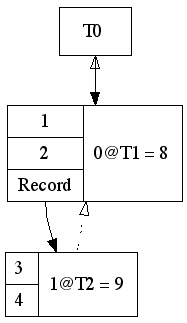

partial_persistence.rb |
|
|---|---|
|
A persistent data structure is one where all versions of the structure are kept, so that old versions can be queried. Partial persistence is a form of this where updates are only permitted on the latest version. The structure implemented here supports partial persistence with amortized
constant time multiplicative overhead for both queries and updates (meaning
that no matter how many modifications you make, the overhead cost stays
constant), and It was initially outlined in the 1986 paper “Making data structures persistent” by Driscoll, Sarnak, Sleator and Tarjan, though my understanding of it comes via lecture one of the “Advanced Data Structures” class at MIT, available online. |
|
|
Minitest is used both to document and verify behaviour. |
require 'minitest/autorun'
class PartialPersistenceTest < MiniTest::Unit::TestCase |
|
This code demonstrates partial persistence of a record-based data structure. Each element in the record is either a value or a pointer to another record. Updates are performed by specifying a path to the record, an index into that record, and the new value. Querying is done by inspecting the entire structure at a point in time. |
def test_interface
ds = PartialPersistence.wrap([1, 2, [3, 4]])
ds.set([], 0, 8)
ds.set([2], 1, 9)
assert_equal [1, 2, [3, 4]], ds.unwrap(0)
assert_equal [8, 2, [3, 4]], ds.unwrap(1)
assert_equal [8, 2, [3, 9]], ds.unwrap(2)
end
def test_performance
ds = PartialPersistence.wrap([1, 2, [3, -1]])
range = (1..Record::MAX_DELTAS*11+2)
range.each do |x|
ds.set([2], 1, x)
end
range.each do |x|
assert_equal [1, 2, [3, x]], ds.unwrap(x)
end
end |
|
The theory holds for cyclic data structures, but this implementation does not yet support them. |
def test_cyclic
end
end |
Data StructuresRecordThe core element in the data structure is a record, which is composed of three elements. |
class Record |
|
The first is an immutable list of initial values. Each value is either a piece of data being stored, or a link to another record. |
attr_reader :values |
|
Alongside the values, a list of deltas (modifications) is stored. The value
of the record at time t is This is sufficient to achieve partial persistence, but requires |
class Delta < Struct.new(:t, :index, :new_value)
end
attr_reader :deltas |
|
To achieve amortized constant time the structure needs to be rebalanced
periodically, which may involve creating new records. For this to work, all
links between records are stored bi-directionally so that they can be
quickly updated when a new record is created. The forward link is already
stored in |
class Backlink < Struct.new(:record, :index); end
def add_backlink(record, index)
@backlinks << Backlink.new(record, index)
end
attr_reader :backlinks |
|
Initially |
def initialize(values)
@values = values
@deltas = []
@backlinks = []
@values.each.with_index do |x, i|
if x.is_a?(Record)
x.add_backlink(self, i)
end
end
end
end |
RootA special root node is required to act as a constant entry point for the structure. Since records can be rebalanced and new records created, without this entry point there is no way to know which record to start with for a given version! An efficient implementation of the root node is outside the scope of what is being demonstrated. A naive but easy to understand implementation is provided so as not to distract. |
class Root
attr_reader :records
def initialize(record)
@records = { 0 => record }
record.add_backlink(self, 0)
end
end |
PartialPersistenceAn overall wrapper class is provided to act as the public interface for the structure. |
class PartialPersistence
attr_reader :now
attr_reader :root
protected
def initialize(record)
@root = Root.new(record)
@now = 0
end
end |
Algorithms |
|
QueriesFor an individual record, the |
class Record
def values_at_time(t)
base = values.dup
deltas.each do |d|
break if d.t > t
base[d.index] = d.new_value
end
base
end
end |
|
A special case for handling deltas is required for the root node, otherwise there is no way to get get a handle on an initial node for any given version. |
class Root
def value_at_time(t)
records.to_a.reverse.detect {|tn, _|
tn <= t
}.last
end |
|
|
def unwrap(t)
unwrapper = lambda do |x|
case x
when Record then x.values_at_time(t).map(&unwrapper)
else x
end
end
unwrapper[value_at_time(t)]
end
end
class PartialPersistence
def unwrap(t = now)
@root.unwrap(t)
end
end |
UpdatesUpdating first requires querying the current version of the structure to
extract the record referenced by the given |
class PartialPersistence
def set(path, index, value)
current_root = root.value_at_time(now)
current_record = record_at_path(current_root, path, now) |
|
Every update creates a new version, whether the structure actually changed or not. This is not strictly space efficient, but has no impact on time (since performance is amortized constant) and provides an easier to use interface: clients can keep track of the current time without having to check the return value of this method. |
@now += 1
current_record.add_delta(now, index, value)
end
private
def record_at_path(initial, path, now)
path.inject(initial) do |record, i|
record.values_at_time(now)[i]
end
end
end
class Record |
|
This is the heart of the algorithm. When the number of deltas crosses a threshold, the structure is rebalanced by performing the following operations:
Now, any queries for time t will bypass the old record completely and instead use the new record, which responds quickly since it does not have any deltas yet. This process of “resetting” the deltas of each node is the key to the amortized constant performance of the algorithm. All existing modifications are left in place on the old record, so that queries for historical versions can still find them. Note that adding a delta to a parent record may in turn trigger a rebalance of that record as well! |
def add_delta(t, index, value)
d = Delta.new(t, index, value)
if deltas.length < MAX_DELTAS
deltas << d
self
else
new_record = rebalance(t, d)
copy_backlinks(new_record, t)
clear_backlinks
new_record
end
end
private
def rebalance(t, d)
value = values_at_time(t)
value[d.index] = d.new_value
self.class.new(value)
end |
|
A special case is required when adding a back link to a parent that has itself just rebalanced. In this case, the parent has already added itself as a back link to the record as part of the creation process, so it should not be added again here. |
def copy_backlinks(new_record, t)
backlinks.each do |l|
new_back_record = l.record.add_delta(t, l.index, new_record)
parent_rebalanced = new_back_record != l.record
unless parent_rebalanced
new_record.add_backlink(
new_back_record,
l.index
)
end
end
end |
|
A node can only ever be rebalanced once, meaning that the back links no longer need to be stored after it has happened. |
def clear_backlinks
@backlinks = []
end |
|
A caveat is that the amortized constant time bound only holds when the maximum number of back links to any one record is less than or equal to half the number of deltas stored per record. |
MAX_DELTAS = 10
end |
|
As mentioned above, a naive implementation is provided for storing deltas in the root and is not relevant to the structure being presented. |
class Root
def add_delta(t, index, value)
raise unless index == 0
@records[t] = value
self
end
end |
ConstructionFor convencience, a |
def PartialPersistence.wrap(array)
wrapper = lambda do |x|
case x
when Array then Record.new(x.map(&wrapper))
else x
end
end
new(wrapper[array])
end |
DebuggingLabelings |
class Delta
end |
VisualizationProgramatically creating a diagram of the structure with GraphViz is straight forward, yet finicky. The initial example is represent thusly:  |
class Visualizer
def self.output(ds, filename = 'output.png')
require 'graphviz'
g = GraphViz::new("structs")
add_root(g, ds.root)
ObjectSpace.each_object(Record) do |record|
add_record(g, record)
end
g.output( :png => filename)
end
def self.add_root(g, root)
g.add_nodes(root.object_id.to_s,
"shape" => "record",
"label" => root.records.map {|(t, _)|
"<t%i> T%i" % [t, t]
}.join("|")
)
root.records.map {|(t, child)|
g.add_edges( {root.object_id.to_s => "t#{t}"}, child.object_id.to_s )
}
end
def self.add_record(g, record)
values = record.values.map.with_index {|v, i| "<v%s> %s" % [i, label(v)] }
deltas = record.deltas.map.with_index {|d, i| "<d%s> %s" % [i, label(d)] }
g.add_nodes(record.object_id.to_s,
"shape" => "record",
"label" => [
values.join("|"),
deltas.join("|")
].map {|x| "{%s}" % x }.join("|")
)
add_edges(g, record, record.values, ->(x){ x }, "v")
add_edges(g, record, record.deltas, ->(x){ x.new_value }, "d")
add_edges(g, record, record.backlinks, ->(x){ x.record }, "",
style: 'dotted',
arrowhead: 'empty'
)
end
def self.add_edges(g, parent, children, unwrap, source_prefix, opts = {})
children.each.with_index do |child, i|
child = unwrap[child]
next unless child.is_a?(Record) || child.is_a?(Root)
g.add_edges(
{parent.object_id.to_s => "#{source_prefix}#{i}"},
child.object_id.to_s,
opts
)
end
end
def self.label(v)
case v
when Record then "Record"
when Record::Delta then
"%i@T%i = %s" % [
v.index,
v.t,
v.new_value.is_a?(Record) ? "Record" : v.new_value
]
else
v
end
end
end |